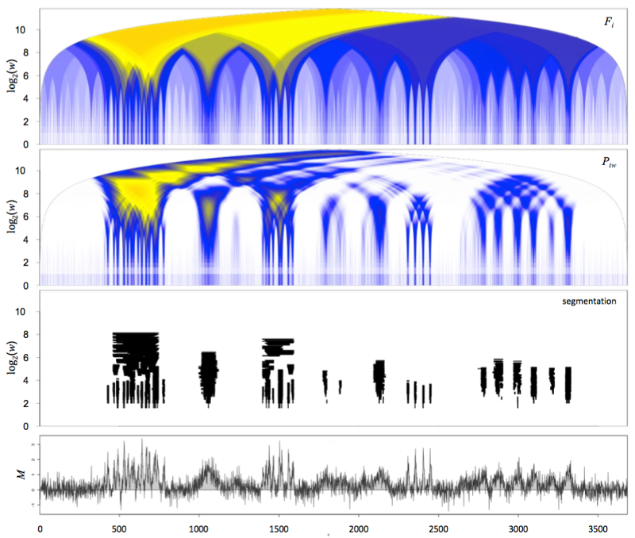

MRA.TA is an R package for multi-resolution representation and segmentation of
genomic profiles from
tiling arrays.
This package was originally developed to detect enriched regions of arbitrary size from Chromosome Conformation Capture on Chip (4C) data, the microarray version of 4C employed in early genomic studies of chromosome conformations, as well as from Chromatin Immuno-Precipitation on chip (ChIP-on-chip) data, the precursor of the ChIP-seq technique.
More precisely, MRA.TA provides a set of normalization, assignment of probes
to restriction fragments and probe filtering functions dedicated to 4C
data1, as well as multi-resolution analysis methods that are
relevant for both 4C and ChIP-on-chip profiles.

The example above shows a multi-resolution analysis performed with MRA.TA,
including the domaingram representation2 (panel Piw)
and the corresponding multi-resolution segmentation (panel segmentation),
from simulated data (bottom panel, M).
Segmentations computed with MRA.TA are based on an algorithm tracing
locally optimal enrichment statistics (top panel Fi).
This algorithm produces raw segmentation trees which are then refined and
simplified using rules of internal consistency
(automated post-processing).
For further details and examples based on real 4C data see Leblanc et al. 2016 and the associated MiMB.4C workflow.
Run the R code below to install MRA.TA.
library("devtools")
install_github("benja0x40/MRA.TA")
If the installation fails, try to install dependencies manually as follows.
devtools, stringr, getopt, plotrixBiostrings, GenomicRangesRun the R code below to install CRAN and Bioconductor package dependencies
for MRA.TA.
# Already installed
pkg <- installed.packages()[, "Package"]
# CRAN packages
lst <- c("devtools", "stringr", "getopt", "plotrix")
lst <- setdiff(lst, pkg)
if(length(lst) > 0) install.packages(lst, repos = "https://cloud.r-project.org/")
# Bioconductor packages
lst <- c("Biostrings", "GenomicRanges")
lst <- setdiff(lst, pkg)
if(length(lst) > 0) {
source("https://bioconductor.org/biocLite.R")
biocLite(lst)
}
Thanks to Elzo de Wit for kindly sharing his source code and suggestions on the multi-resolution methods, and to Bas Tolhuis who greatly helped with Nimblegen tiling array data analyses, also sharing source code as well as unpublished biological data. Thanks to Jean-Philippe Villemin for testing the installation and execution of the associated MiMB.4C workflow and reporting issues and suggestions.
1. Leblanc B., Comet I., Bantignies F., and Cavalli G., Chromosome Conformation Capture on Chip (4C): data processing. Book chapter in Polycomb Group Proteins: Methods and Protocols. Lanzuolo C., Bodega B. editors, Methods in Molecular Biology (2016).
publisher | pubmed
2. de Wit E., Braunschweig U., Greil F., Bussemaker H. J. & van Steensel B. Global chromatin domain organization of the Drosophila genome. PLoS Genetics (2008).
publisher | pubmed